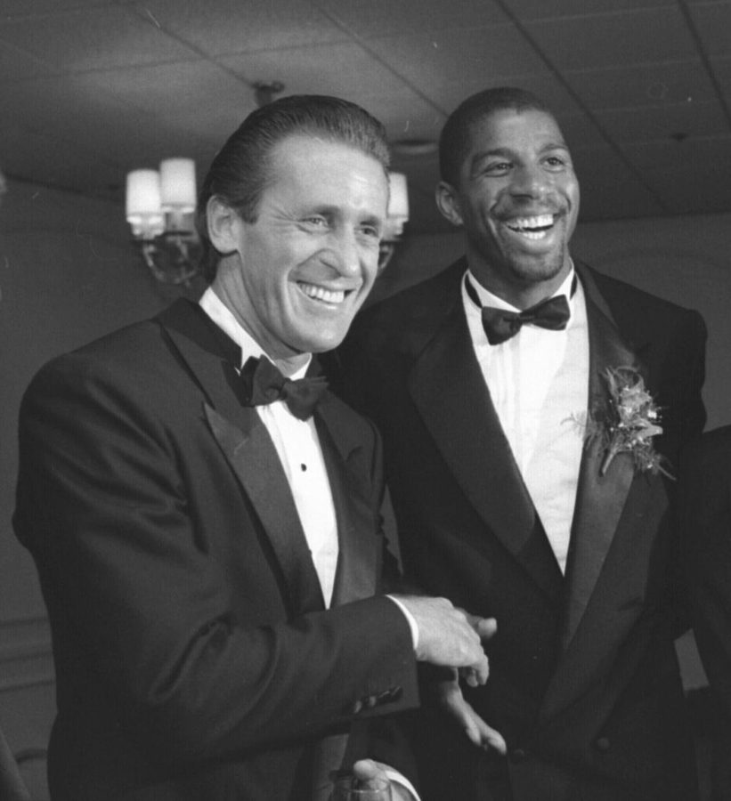
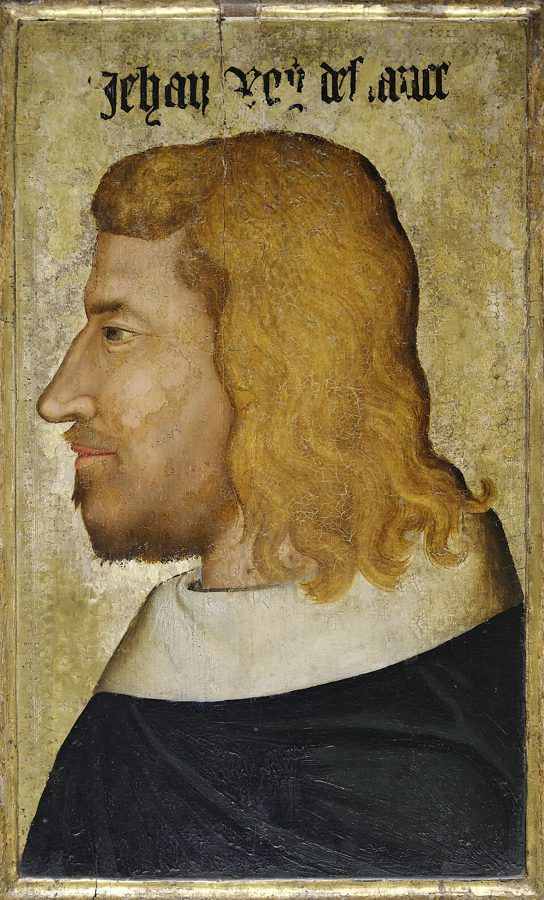
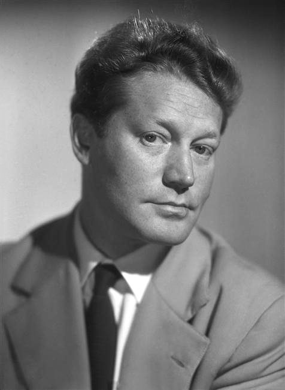

这一篇在做什么
1999 年，作者一家在巴黎等来第二个孩子，是个女儿。人人都说这是「国王的选择」（choix du roi），作者听不懂这句话。全篇写从怀孕到生产的几个月：穿黑衬衫的产科医生、开一大堆药的女医生、法国的产假和住院、助产士叮嘱「千万别告诉出租车司机你要生了」，最后是临产那天凌晨的一趟出租车。读的时候抓两条线：巴黎和纽约怎样对待怀孕；「国王」这个说法一路怎么变。
讷伊（Neuilly-sur-Seine）市政厅，2013 年。§7 说女儿在讷伊的诊所出生，作者第二天步行到这里登记出生。Celette，CC BY-SA 3.0，维基共享资源
读之前：这篇的来历
这一篇是女儿出生以后写的：开头说孩子是「去年秋天」在巴黎生的，作者说自己在巴黎已经住了四年。它属于第四部分「描绘世界的机器」。前一篇（第 20 篇）结尾，1999 年 5 月底 Balzar 的老侍者们请客，那时 Martha 已经怀孕五个月；后一篇（第 22 篇）又倒回这年 8 月，Martha 挺着肚子去丽兹酒店的泳池游泳。儿子 Luke 这时四五岁，一家人住在圣日耳曼大道边上，一年后就要回纽约。这一篇写的全是家里的事，但作者照样拿它比较两种社会，§4 还谈到了法国的福利制度。
「国王的选择」到底是什么意思？一个美国人在巴黎生孩子，看到的那些不同，是笑话，还是背后真有一套不同的道理？
读的时候带着这几个问题。不用先找答案，读完回来对照「检查一下理解」。
作者说真正的文化差异藏在一种特别的时刻里。是哪种时刻？后面哪些场面就是这种时刻？§1 §2
纽约的白大褂和巴黎的黑衬衫，作者偏向哪一边？他有没有给自己留余地？§3 §4
「掉头」这件小事为什么写了那么长？临产那天它派上用场了吗？§5 §7
出租车司机的讲解解开了 §1 的疑问吗？作者最后给「国王」找到了自己的什么意思？§6 §7
这一篇的路线
原书这一篇一气写下来，本站分成七节。三条线交替：「国王的选择」这句话开头抛出，作者先放着不管，中间换着样子出现（医生说的「王室待遇」、出过王族的诊所），到 §6 才由出租车司机正面讲一遍；巴黎和纽约的对照占了 §2 到 §4 的大半，作者讲道理多在这里；「掉头」是 §5 才冒出来的喜剧线，到 §7 和临产那天撞在一起。读译本时，§5 突然花一大段讲路口地上的一个箭头，§7 结尾从给婴儿穿衣服一下跳到宇宙，都不是漏看了什么：前面几乎全是玩笑，最后一段才认真。
§1
§2
§3
§4
§5
§6
§7
国王
巴黎/纽约
掉头
国王的选择
王室待遇
萨利克法
我的王后
发雪茄
黑衣与白袍
性与医疗
产假、住院
出生证明
别说要生了
肯掉头吗
掉反了
本站示意图。每一行是一条线，圆点是这条线在哪一节出现，线段从它第一次出现画到最后一次。七节都是本站分的（原书这一篇不分节）。 作者落在哪： 纽约把怀孕当病来治，巴黎把它当成身体快乐的一章。作者承认法国的「王室待遇」很贵，未必撑得下去，但他觉得，让产妇像女王那样休养几天，看来和补贴烟草、多买一辆坦克一样值得花钱。最后他给「国王的选择」换了意思：人能做的真正庄严的选择，是让生命延续下去。
分节地图
原书这一篇没有分隔，本站按内容分成七节（§2 到 §7 是本站分的，带 * 号）。每一节的粗体是读译本时认得出的场面；下面的斜体是英文这一节开头的几个词，打开电子书搜它就能跳到那里。读完一节打个勾。
人人都说「国王的选择」约 700 词 When we discovered that the child … 抛出疑问。留意「既是玩笑又不是玩笑」这个说法，后面要用。 穿黑丝衬衫的 B 超医生约 900 词 In Paris, the obstetricians all wear … 巴黎和纽约的产科第一次对照；医生那句问话正好演示 §1 说的那种口气。 麻醉师罢工，女医生叫她少吃多游泳约 700 词 I wanted to meet Martha’s doctor … 从见闻拉到判断，全篇说理最集中的一节。 产假、住院，挑两家诊所约 900 词 By law a French woman who … 法国的制度和作者对它的态度；挑诊所时 Martha 只关心麻醉师。 助产士：别告诉司机你要生了约 700 词 Everything was going along fine, in … 喜剧线开场：大道上那个只许出租车掉头的箭头。 司机把车停在路边讲萨利克法约 500 词 We still hadn’t got to the … §1 的疑问在这里得到一个答案；留意一家人听完的反应。 凌晨五点的出租车，诊所里出生约 1400 词 ’You’re wearing stripes?” she asked … 准备了几周的掉头怎样收场；最后一大段从婴儿拉到宇宙，是全篇的落点。
背景：作者默认你知道的事
按在书里出现的顺序排，标题前是节号。
§1 「国王的选择」（choix du roi）法国的一句老话：一家有一儿一女，尤其是先生儿子、再生女儿，叫「国王的选择」。它从哪来没有定论，常见的解释和王位继承有关，§6 那位出租车司机讲的就是这一类。作者觉得这话从巴黎人嘴里说出来，却带着乡下的喜气，像 Pagnol 电影里的村民配着 Trenet 的曲子唱出来的。第 1 篇说过，作者夫妇当年就是听着 Trenet 的唱片动了来巴黎的念头。
Trenet Charles Trenet 法国歌手、词曲作者（1913–2001），代表作有《大海》（La Mer）。他不少歌唱的是法国和巴黎。
Pagnol Marcel Pagnol 法国作家、导演（1895–1974），电影多拍普罗旺斯村镇里的小人物，如《面包师的妻子》（1938）。
§1 作者的美国参照：问答节目、情景喜剧、汤罐头Jeopardy! 是 1964 年开播的美国电视问答节目，Daily Double 是藏在题板里的加倍题，翻出来时主持人格外兴奋。孩子出生后父亲给同事发雪茄是美国老习俗，五六十年代的情景喜剧里常演：Darrin 是《家有仙妻》（Bewitched）里的丈夫，Desi 指《我爱露西》（I Love Lucy）的男主演 Desi Arnaz。沃霍尔（Andy Warhol）1962 年画了一组金宝汤罐头。作者用它说：真要嘲讽，用不着拿好东西。
§2 写医生时用的几个比方作者写巴黎的医生，连用了几个美国读者一看就懂的比方。David Mamet 是美国剧作家，1988 年的剧作《Speed-the-Plow》写两个好莱坞制片人。What to Expect 指 1984 年出版的孕期指南 What to Expect When You’re Expecting，在美国极为流行。Tom Clancy 写军事惊险小说，成名作《猎杀红色十月》（1984）里潜艇靠声纳屏幕找敌人。e. e. cummings 是美国诗人，诗常用全小写、怪排版。
§3 两位 NBA 教练作者拿篮球教练开自己的玩笑。拉玛泽分娩法里，陪产的丈夫叫 coach（教练），他说自己是 Phil Jackson 那一派：场边看不出在干什么，对赢球的气氛却贡献很大。另一位产科医生的发型像 Pat Riley，就是向后梳得油亮的大背头。
Phil Jackson Phil Jackson 1989–1998 年执教芝加哥公牛，六次拿到 NBA 总冠军，外号「禅师」，以场边的冷静出名。
Pat Riley Pat Riley 先后执教湖人、尼克斯，1995 年起执教迈阿密热火。向后梳的油头是他的招牌。

Pat Riley（左）和湖人球星 Magic Johnson，1989 年在洛杉矶的一次颁奖活动上，那时 Riley 是湖人主教练。与本书无关，看他的发型。Lacy Atkins，CC BY 4.0，维基共享资源 §3 拉玛泽、生菜和红酒拉玛泽分娩法（Lamaze）源于法国：1950 年代初，巴黎的产科医生 Fernand Lamaze 借鉴苏联的做法，用呼吸练习和产前教育帮产妇应付阵痛，法文叫「无痛分娩」（accouchement sans douleur）。它后来在美国流行，美国的准父母要去上「拉玛泽班」。书里朋友的笑话就拿这个法文名字开刀。§3 末尾交代，不准吃生菜是为了防弓形虫病，书里说它在美国少见、在法国常见；让喝红酒，是书里医生的说法（见「后来」）。
§4 法国的产假书里列的数字和法国现行的规定一致：头一两胎产前 6 周、产后 10 周，共 16 周；第三胎起产前 8 周、产后 18 周；三胞胎以上共 46 周。作者拿美国作比：儿子 Luke 在纽约西奈山医院（Mount Sinai）出生，夫妻俩两天之内就得出院。医生那句「对用户是王室待遇，对医生不错，对社会很贵」，是这一节说理的起点。
§4 讷伊和布洛涅的诊所讷伊紧挨巴黎西边的城界，是出名的富人区；布洛涅-比扬古（Boulogne-Billancourt）在它南边。两家都是诊所（clinique），不是大医院。作者拿两本书形容：菲茨杰拉德的《夜色温柔》（Tender Is the Night，1934）里，Nicole 被送进瑞士的疗养院；Bemelmans 的童书《玛德琳》（Madeline，1939）里，小姑娘割阑尾住院，看见天花板上的裂缝像一只兔子。第 1 篇说过，作者小时候心里的巴黎有一部分就来自玛德琳的书。
§5 出租车站和「掉头」巴黎的出租车除了路上招手，还在固定的候车站（station de taxis）排队，站上立着蓝底的 TAXIS 牌子。作者家对面的圣日耳曼大道上就有一个。按书里的描述，大道是单行道，另划了一条反向的公交出租车道，路口地上画着一个只许出租车掉头（demi-tour）的弯箭头，司机肯不肯掉全看心情。司机不载临产孕妇、救护车不出城界，都是书里助产士的说法。
巴黎十二区的一个出租车候车站，2023 年。不是书里那个站，看站牌的样子。Chabe01，CC BY-SA 4.0，维基共享资源
§6 萨利克法和《被诅咒的国王》法国王位只传男，也不经女儿传给外孙。这条规矩是 14 世纪定下来的：1328 年卡佩王朝的直系男嗣断了，法国贵族推举瓦卢瓦家的腓力六世继位，拒绝了经母亲提出继承权的英王爱德华三世；后人援引古代法兰克人的《萨利克法》（loi salique）为这条规矩作依据。这桩继承之争是英法百年战争的起因之一。司机说「拉丁国家都行萨利克法」之类，是他自己的概括，不必当史实读。
约翰二世 Jean II le Bon 「好人约翰」，1350–1364 年在位，1356 年在普瓦捷之战中被英军俘虏。司机推荐读他的那一段。
Druon Maurice Druon 法国小说家（1918–2009），1966 年入选法兰西学院。七卷本历史小说《被诅咒的国王》（Les Rois maudits，1955–1977）从腓力四世写到约翰二世，在法国两次拍成电视剧。

约翰二世的侧面像，14 世纪中叶，现藏卢浮宫。放在这里是因为司机点了他的名。佚名，公有领域，维基共享资源 
Maurice Druon，1953 年，《被诅咒的国王》第一卷出版前两年。Studio Harcourt，CC BY-SA 4.0，维基共享资源 §7 Bonpoint、市政厅和「树篱田里的核电站」Bonpoint 是 1975 年在巴黎开张的高档童装店。在法国，孩子出生要到出生地的市政厅（mairie）登记，所以作者第二天走去讷伊市政厅。bocage 指法国西部诺曼底、布列塔尼一带用树篱隔成小块田地的乡村；法国大部分电力来自核电，核电站多建在乡下。作者拿它比诊所地下室那扇小白门后面的手术区：外面是老式田园，里面是最新的设备。
词与短语
只收中文译文多半传不出原味的地方：熟词生义、反话和挖苦、典故、夹在英文里的法文。读译本读到觉得别扭、不知道作者在说什么时，来这里找那一节的；斜体小字是原句里的几个英文词，在电子书里搜它就能找到原文。
§1 人人都说「国王的选择」
choix du roi
… blessed with the choix du roi, the king’s choice …
（法文）国王的选择
先儿后女的一儿一女（见「背景」）。全篇的题眼：B 超技师、冲印店的女人、哲学家朋友都这么说，作者一路被这句话追着跑，到 §6 才有人给他讲清楚。
take a shvitz
… your grandfather used to take a shvitz with
一起洗蒸汽浴
shvitz 是意第绪语的「出汗」，指老式的蒸汽浴室。Martha 的玩笑：如今纽约的规矩是给儿子起祖父那辈老伙计的名字，于是满街是 Max、Sam、Otto。
requisite
… in addition to the requisite Maxes …
少不了的（那几个 Max）
requisite 是「必备的」，后面跟复数 Maxes：圈子里叫 Max 的孩子不止一个，像规定动作。语气是挖苦这种起名的时髦。
the whole senior staff
… the whole senior staff of Benny’s Market …
（杂货铺的）全体老伙计
Benny’s Market 和后面那句「全城最低价」，像一家老式杂货铺的招牌。这一串名字老派到像一家老杂货店的店员名单。
an immortality pill
Or only girls and an immortality pill.
（再加）一颗长生不老药
接着上一句：当国王就只要儿子，免得有人篡位；要么只生女儿，外加一颗长生药，自己永远不用传位。正经地推理一件荒唐事，是作者惯用的笑法。
peasants-in-the-spring ecstasy
… air of peasants-in-the-spring ecstasy about it
像春天里欢天喜地的乡下人
用连字符临时造一个形容词。作者是说这话土：巴黎人说出口，听上去却像田园电影里的村民在庆祝。
meant it … didn’t mean it
… while people meant it, they also didn’t mean it …
是认真的，又不是认真的
全篇的钥匙。作者说文化差异最难懂的不是玩笑和正经分不清，而是一句话同时是两样。§2 B 超医生的问话就是这种时刻。
dessert grand-mère
… the dessert grand-mère is not made by Grandmother …
（法文）奶奶式甜点
菜单上的叫法，「奶奶式」只是家常做法的意思。外国人当真以为是谁的奶奶做的，就是把玩笑当了真。
tête de veau
… The tête de veau is actually the head …
（法文）小牛头
法国的传统菜，真的是小牛头肉。外国人以为是个花哨的菜名，就是把正经话当了玩笑。
pass out cigars
… a New Yorker passes out cigars in the office …
（给大家）发雪茄
pass out 在这里是分发，不是「昏倒」。孩子出生后父亲发雪茄的老习俗（见「背景」）。
Nobody tried to eat Warhol’s soups.
Nobody tried to eat Warhol’s soups.
没人想去吃沃霍尔的汤
意思是：纯粹的嘲讽用不着真东西，画出来的汤罐头不必能吃；纽约父亲发的雪茄却是好的，可见他在开玩笑，也是真心庆祝。
§2 穿黑丝衬衫的 B 超医生
smart
… not a smart Jewish girl in a lab coat …
精明能干的
美式英语里 smart 是聪明，不是英式的「衣着时髦」。纽约产科医生的典型：穿白大褂的聪明犹太姑娘；巴黎的是穿黑衣、留胡茬的男人。
a day’s growth of beard
… a man with a day’s growth of beard …
一天没刮的胡茬
growth 指长出来的胡子。和黑牛仔裤、黑丝衬衫一起，是作者笔下巴黎产科医生的「制服」；§3 的另一位医生也是一身黑。
performs
… had been sent to performs in a nineteenth-century apartment
（在那里）执业
perform 可以指做手术、做检查，更常用来说演出。作者故意选这个词，B 超医生的公寓像个舞台，后面他从帘子后面出场。
windows that open like doors
… and windows that open like doors
像门一样开的落地窗
巴黎老公寓常见的落地双扇窗。第 1 篇末尾，作者把「到处是像门一样的窗」列为他爱的巴黎日常之一。
plunging
… front and plunging down toward his navel
（领口）一路开到
plunging neckline 是女装「深 V 领」的说法，用在男医生的衬衫上是玩笑。
neither kidding nor not kidding
… he was neither kidding nor not kidding
既不是开玩笑，也不是不开玩笑
医生问受孕是在夜里还是第二天早上，作者愣了三次才明白。这里回到 §1 说的那种时刻：他知道问这个没用，但真心把那一刻看得珍贵。
doubled the sum of her health
… has doubled the sum of her health
健康加了倍
作者替法国人的做法找理由：孕妇不是病人，反倒是两个人的健康加在一起，所以用不着更衣室和病号服。半认真半玩笑的算术。
full of allure
… in embryo, full of allure, as the receptionist said
很有派头
作者特意说是前台的话。法文 allure 指风度、派头，英文 allure 却偏向「诱惑力」，用在胚胎照片上，两种意思都好笑。
have books out
… and they all have books out
都出过书
have a book out 是「出了一本书」。Martha 挖苦纽约的名医：穿白大褂，人人有书。§2 末尾作者接着拿「出书」和法国医生的「开药」对比。
the way the doctors in New York say ‘uninsured’
… the doctors in New York say ‘uninsured.’
像纽约医生说「没保险」那样
美国看病靠保险，没保险的病人医生最怕。法国医生说「沙拉」也是这种避之不及的口气。原因到 §3 末尾才交代。
self-expression with a pen
… a similar need for self-expression with a pen …
拿笔表现自我
挖苦：纽约医生写书、法国医生开六项处方，满足的是同一种「拿起笔来表达自己」的欲望，只是开处方不用拍作者照。
§3 麻醉师罢工，女医生叫她少吃多游泳
coached
… delivering the baby while I “coached”
（陪产）当「教练」
拉玛泽分娩法里陪产的丈夫叫 coach。作者加了引号，紧接着就拿篮球教练 Phil Jackson 自嘲（见「背景」）。
scabs
… where the anesthesiologists are scabs
不参加罢工的人
scab 本义是伤疤，在劳工运动里是骂人话：破坏罢工的「工贼」。Martha 宁可找工贼或修女来打麻醉，也不要罢工的人。
positive outcome
… can have a “positive outcome.”
「良好结局」
医疗报告里的套话。作者加上引号，挖苦美国把生孩子说得像治病的疗效。
a sentimental education
… a chapter in a sentimental education …
一场情感教育
福楼拜小说《情感教育》（L’Éducation sentimentale，1869）的英文名。第 1 篇作者说他来巴黎是来接受一场「情感再教育」。见「值得停下来的句子」。
de rigueur
… it is de rigueur for every pregnant supermodel …
（法文）照规矩少不了的
英文里常用的法文短语，「必须的、合乎时尚规矩的」。
the middle distance
… she looks off into the middle distance …
不远不近的某处（目光放空）
look into the middle distance 是「望着前方出神」。作者说孕照里的超模不是在做梦，而是有点焦虑，像想不起丈夫的电吉他关没关。
babe into mother by way of baby
… babe into mother by way of baby
由辣妹经过宝宝变成妈妈
babe 是俚语里的「性感女郎」，baby 是婴儿，两个词只差几个字母。作者用这个文字游戏说美国孕照的潜台词：性感被升华成了母性。
We Have a Winner
… her fecundity: We Have a Winner
「我们有赢家了」
电视游戏节目宣布获奖者的套话。作者说在法国，孕妇证明了自己有魅力又能生，像中了奖。
fully busy
… as our baby-sitter says, fully busy
忙得满满的
作者特意标明是保姆的话，这个说法不地道。意思是：麻醉师只要不罢工，就忙得很。言下之意，法国产妇打麻醉的多，拉玛泽那一套只是小圈子的事。
accouchement sans douleur
… the English for accouchement sans douleur?
（法文）无痛分娩
拉玛泽法在法国的名字（见「背景」）。问「英文怎么说」，另一个人答「谎话」：说的是不打麻醉的自然分娩根本不可能不痛。
§4 产假、住院，挑两家诊所
on the dole
They would already be on the dole.
领上公家的钱了
on the dole 本来是失业领救济，口气有点不屑。这里说的其实是带薪产假：法国的模特怀孕 21 周后就能休假领钱。作者故意用这个俗话。
as finely tuned as a viola d’amore
… as finely tuned as a viola d’amore
调得像柔音中提琴一样精细
viola d’amore 是巴洛克时代的弓弦乐器，除了拉奏的弦还有一组共鸣弦，调音很费事。用来夸法国法律细到每种情况都想到了。
coach
… the airless, roomless, comfortless coach packed …
经济舱
美式英语里 coach 是飞机、火车的经济座。§3 刚用过「教练」的意思，这里换了一个。作者说，在许多法国人看来，美国治下的世纪末也许像一趟越洋航班：经济舱挤得透不过气，前排坐着几个有钱人。
no such thing as a free lunch, or clinic
… no such thing as a free lunch, or clinic
天下没有白吃的午餐，也没有白住的诊所
在美国人的老话后面补了个 or clinic。作者说他美国得足以懂这个道理，又法国得足以不服气。
a lying in rather than a pushing out
… a lying in rather than a pushing out …
躺下来坐月子，而不是使劲生完就走
lying-in 是老式英语里的「产褥期」，作者把它拆开，和 pushing out（用力生出来）、going home 对着排：一边是被照顾的休养，一边是流水线。
leafy suburb
… in the leafy suburb of Neuilly …
绿树成荫的高级住宅区
leafy 字面是多树叶，英美的说法里 leafy suburb 暗含「有钱、体面」。讷伊正是这种地方。
cheesy kingly company
… since it was such cheesy kingly company
这么俗气的王族邻居
cheesy 是俗气、上不了台面。客厅的剪报记着在这里出生的王族：作者记得有一位拿破仑家族的王位觊觎者，好像还有一位南斯拉夫王子，都是没有王位的王族，作者喜欢的正是这股廉价的王气。「国王」线在这里又露了一次面。
soixante-huitards
… the kind of ex-Trotskyite soixante-huitards who …
（法文）六八一代
参加过 1968 年五月风潮的那代人，很多人当年是托派之类的左派。Martha 怕麻醉师里有这种人，临产那天号召罢工。
sansculotte
… neither of whom looked like a sansculotte
（法文）无套裤汉
法国大革命时的激进平民，因为穿长裤、不穿贵族的及膝套裤得名。作者说两位麻醉师看上去都不像会造反的人。
§5 助产士：别告诉司机你要生了
sage-femme
… our meeting with the sage-femme, the wise woman …
（法文）助产士
字面是「聪明的女人」，作者照字面译了一遍再给出美国的叫法 midwife。§7 诊所里值夜班的也是一位 sage-femme。
a Jacques Tati modern place
… an odd Jacques Tati modern place
塔蒂电影里那种现代建筑
法国导演 Jacques Tati 的《我的舅舅》（Mon Oncle，1958）、《玩乐时间》（Playtime，1967）拿冷冰冰的现代建筑开玩笑。
breathing and lying
… on two essential points: breathing and lying
呼吸和撒谎
lying 一眼看去像「躺着」，和呼吸并列，读者会以为是分娩的姿势。下一句才揭开：是撒谎，别告诉司机你要生了。
demi-tour
Just get him to do the demi-tour.
（法文）掉头
字面是「半圈」。§5 到 §7 的喜剧线就挂在这个词上。
half-metaphysical possibility
… it is also a half-metaphysical possibility …
半玄学的可能性
大词小用：一个画在地上的掉头箭头，说它存在不存在成了哲学问题，因为司机常常一口咬定没有这回事。
my French becomes very abstract
… my French becomes very abstract
我的法语就变得很抽象
自嘲：一紧张，他只会说「路面上印着一个宣告此种操作可能性的箭头」这种书面大词，跟司机吵架完全用不上。
get hot under the collar
… give up or get hot under the collar …
发火
字面是领子底下发热，就是动了气。
the insult … the injury
… the insult of being instructed would come the injury …
被人指点是侮辱，再加上实际的损害
化用习语 add insult to injury（伤口上再撒盐），顺序倒过来：先被乘客教怎么开车，再被要求冒着孕妇生在车里的风险。
§6 司机把车停在路边讲萨利克法
came on cue
… which, of course, came on cue
准时来了
on cue 是演员接到提示就上场。作者听到「是妹妹」三个字就绷紧了，等着那句「国王的选择」，果然一字不差。
didn’t miss a beat
But he didn’t miss a beat.
一点没卡壳
作者那句「请您解释一下」本是没好气的反问，司机却毫不犹豫地当真回答了。
let … go by
I let the Anglo-Saxon thing go by.
（「盎格鲁-撒克逊人」这顶帽子）我就不计较了
法国人习惯把英美人统称「盎格鲁-撒克逊人」，安在一个美国人头上并不准确。let it go by 是「让它过去，不去纠正」。
a nana or a mec
… if the king has a nana or a mec
（法文口语）妞儿还是小子
两个都是法语俚语。司机讲宫廷继承法，用的却是街头的词，作者特意照录。
strong piece … pawn
… is your strong piece, to be kept in reserve …
主力棋子……小卒
下棋的比方：儿子是留在后方守王位的大子，女儿是拿去联姻、扩张地盘的卒子。
Tendresse
Tendresse has nothing to do with it.
（法文）温情跟这没关系
司机说「国王的选择」本来是算计，不是疼爱。作者在 §1 觉得这句话有一股乡下喜气，这里却被讲成了冷冰冰的权术。
§7 凌晨五点的出租车，诊所里出生
a touch more finish
… a dad who had a touch more finish
再讲究一点
finish 作名词是「最后一道工序、成品的光泽」，用在人身上指修饰、派头。纽约生儿子时他穿牛仔裤，法国的孩子该见一位体面点的爸爸。
number
… a nice maroon cotton number
一套（栗色棉西装）
口语里 number 可以指一件衣服，常带点打趣。
that weird New York Nazi taxi salute
… that weird New York Nazi taxi salute
纽约那种像纳粹敬礼的拦车手势
在纽约拦车要高高地直伸手臂。作者练了几周怎么让司机掉头，车却是 Martha 站到街上一伸手拦下的。
my queen
I took the hand of my queen.
我握住王后的手
「国王」线在临产路上冒出来：作者给自己封了王，给妻子封了后。下一句她就小声提醒，车开反了。
nothing doing
… but of course, nothing doing
没门儿
口语，「不行、办不到」。助产士非要那张验血单不可，回家拿也得拿。
syndicalism
… epidural, having escaped French syndicalism …
（法国的）工会和罢工
法文 syndicat 是工会。意思是：麻醉师没罢工，硬膜外麻醉逃过了工会，却眼看要栽在官僚手里。
done in by
… was about to be done in by French bureaucracy
栽在……手里
be done in 是「被干掉、被毁了」。后面的结局是反讽：他飞车拿回的那张纸，被搁在暖气片上，再没人看过。
bloc
… down in the basement there was a bloc
（法文）手术区
bloc opératoire 的简称。参观诊所时人家只给他们看了花园和客厅。
the nuclear power plant hidden in the bocage
… the nuclear power plant hidden in the bocage
藏在树篱田里的核电站
bocage 是法国西部用树篱围起的田园（见「背景」）。作者觉得这很法国：外表随意老派，里面是一流的设备，正像医生那种安静的笃定是巴黎人散漫的另一面。
prison garb
… had dressed him in prison garb …
囚服
玩笑：纽约的医院给上百个新生儿穿一模一样的白衣白帽，喂奶还要核对手环号码，像监狱。在讷伊，是作者亲手给女儿穿上妈妈在 Bonpoint 买的衣服。
like the first paragraph of a nineteenth-century novel
… like the first paragraph of a nineteenth-century novel
像十九世纪小说的第一段
十九世纪的长篇小说爱在开头交代主人公父母的姓名、职业、出身和住处。法国的出生证明也这样写，纽约的只是填空打勾。
A birth is not a rebirth.
A birth is not a rebirth.
出生不是重生
rebirth 在英文里常比喻「从头开始、焕然一新」。人们说生孩子是重新开始，作者偏说不是：这是一件沉甸甸的事，后面他把这个孩子说成从时间开端一路收拢下来的那个点。
ma biche
… Ah, calme-toi, ma biche, ma biche …
（法文）我的小鹿
法语里对女人和孩子的昵称。作者问：护士这句是对妈妈说的还是对婴儿说的？两个都说得通。
后来
这一篇写的是 1999 年。下面接着讲书里的制度和医嘱后来怎样。每条都写了核对日期，这类内容过一两年就会变。
产假还是 16 周，父亲有了假
书里列的产假天数，到 2026 年仍是法国的现行规定。变化在父亲这边：2002 年法国设立 11 天的陪产假（congé de paternité），2021 年 7 月起延长到 25 天，加上 3 天出生假共 28 天。2026 年 7 月起，父母每人还可以再请一到两个月的「补充出生假」（congé supplémentaire de naissance），第一个月按工资的七成发，第二个月六成（计算用的工资设上限）。核对于 2026-10。依据：法国政府公共服务网站 service-public.gouv.fr，法国政府网站 info.gouv.fr，法国劳动部劳动法典网站。
医生让喝的红酒，后来印上了禁饮标志
书里医生准 Martha 喝红酒，书里给的理由是补铁、解痉。2006 年 10 月，法国卫生部颁布部令，规定从 2007 年 10 月起所有酒类包装都要印上给孕妇的警示：一个被划掉的孕妇举杯图案，或者一句文字。如今法国官方给孕妇的建议是「怀孕期间零酒精」（zéro alcool pendant la grossesse）。核对于 2026-10。依据：2006 年 10 月 2 日部令（刊于 10 月 3 日《政府公报》），国民议会议员质询的政府书面答复，法国公共卫生署（Santé publique France）。
值得停下来的句子
In New York pregnancy is a ward in the house of medicine; in Paris it is a chapter in a sentimental education— §3，作者给两地的对比下结论的那一段。本站译：在纽约，怀孕是医学大厦里的一间病房；在巴黎，它是一场情感教育里的一章。
分号两边一一对应：New York 对 Paris，ward 对 chapter，the house of medicine 对 a sentimental education。ward 是病房，chapter 是书的一章，一边把怀孕放进医院，一边放进小说。a sentimental education 是福楼拜小说《情感教育》的英文名，英美读者一看就认得；中文的「情感教育」很难让人想到福楼拜，那层「巴黎人的人生课」的意思就丢了。
you have taken part in the only really majestic choice we get to make in life, which is to continue it.— §7，全篇最后一句的后半。本站译：你参与了人生中唯一一个真正庄严的选择：让生命延续下去。
majestic 来自 majesty（陛下），把开头那句「国王的选择」接了回来：国王的选择换成了人人都有的选择。句子先用 majestic 这样的大词抬高，再落在最平常的 continue it 上，落差就是作者的口气。中文的「庄严」译不出 majestic 里的「王」，篇名、开头和这一句之间那根线也就断了。
检查一下理解
先在心里答，再点开。答错的那题，回书里把对应那一节再读一遍。
1.（§1）作者说真正的文化差异藏在哪里？纽约人发雪茄的例子说明了什么？ 不在把玩笑当真、或把正经话当玩笑的时候，而在一句话同时是玩笑又是真心的时候。纽约父亲发雪茄，既在模仿老电视剧里的父亲，又真心庆祝；证据是雪茄是好的，纯嘲讽用不着好东西。
2.（§2）B 超医生问受孕是在夜里还是第二天早上，作者为什么愣了三次？ 先以为是玩笑，再以为是认真，最后才明白两样都是：医生知道这不重要，却真心把那一刻当成一切的起点。这正是 §1 说的「既是又不是玩笑」。
3.（§3）作者怎样概括纽约和巴黎对怀孕的不同看法？ 纽约把怀孕当成一种病，交给穿白大褂的人照料，求一个「良好结局」；巴黎把它当成性的后果，医生关心的是产妇早点恢复、重新出去享受生活。
4.（§4）医生说法国的制度对用户是「王室待遇」、对社会很贵。作者站在哪一边？ 他承认花费大、也许撑不下去，美国人那句「没有白吃的午餐」他也懂；但他已经法国到会固执地觉得，在富裕的社会里，产妇该有这些待遇，这不算奢侈，和烟草补贴、坦克一样值得花钱。
5.（§6）出租车司机怎么解释「国王的选择」？一家人听完是什么反应？ 按萨利克法，儿子守住王位，女儿嫁给别国国王，外孙也成了国王，领地就扩大了：儿子是主力棋子，女儿是卒子，跟温情无关。一家人目瞪口呆，Martha 只想知道这位司机肯不肯掉头。
6.（§5 §7）作者为「掉头」练了几个星期，临产那天用上了吗？ 车是 Martha 在路边用纽约式的手势拦到的。作者让司机过街掉头，司机照办了，却开反了方向，只好再掉回去。练了几周的那一招，到头来添了乱。
用一句话说这一篇，写给一个没读过的人。
精彩回顾
读过又忘了，从这里想起来。挑的是这一篇最值得记住的场面和说法，不按原书顺序；每条后面是节号，想细看就回书里那一节。全书各篇的这一节都收在全书回顾 。
一句话： 作者在巴黎迎来女儿，一路追问「国王的选择」是什么意思，最后自己给了答案：延续生命就是人人都有的、真正庄严的选择。
黑丝衬衫的 B 超医生 医生的衬衫敞到肚脐，开口先问受孕是在夜里还是第二天早上。作者愣了三次才明白：他在开玩笑，又不全是玩笑。
§2 说「沙拉」像说「没保险」 法国医生给 Martha 开一大堆药，准她喝红酒，却严禁生菜，说起沙拉的口气像纽约医生说「没保险」。原来是防弓形虫。
§2 §3 呼吸和撒谎 助产士只讲两件要紧事：用横膈膜呼吸；还有，千万别让出租车司机知道你要生了。作者从此不分昼夜去打车，专练让司机掉头。
§5 司机停车讲萨利克法 作者没好气地请司机解释「国王的选择」，司机真把车停在路边，从萨利克法讲到百年战争，还推荐了一套历史小说。一家人目瞪口呆。
§6 掉了头，开反了 凌晨五点，作者让司机掉头，司机乖乖照办，却开反了方向。到了诊所又因为一张验血单，作者打车回家取，那张纸后来谁也没看。
§7 唯一庄严的选择 在女儿床边，作者说出生不是重新开始，而是一件沉甸甸的事；人能参与的真正庄严的选择，是让生命延续下去。
§7